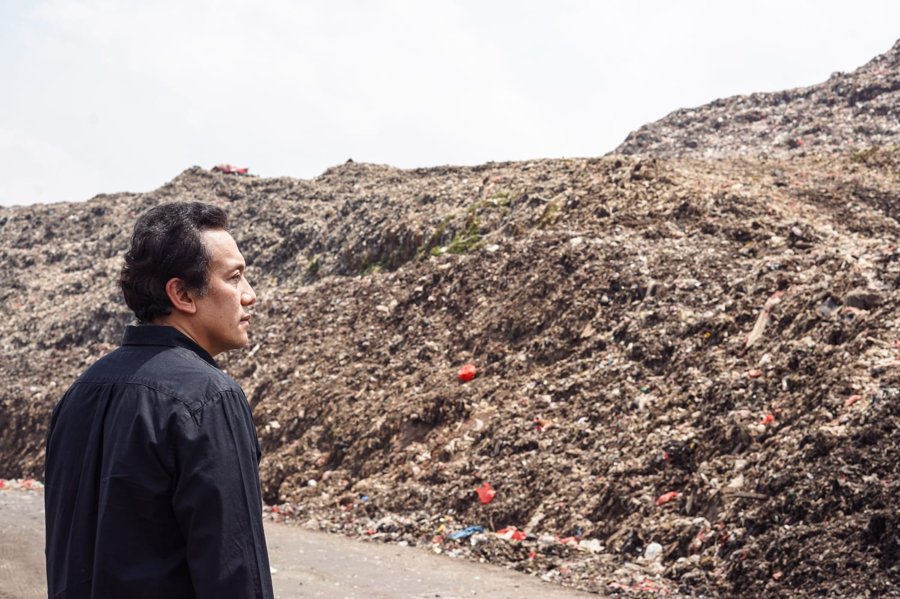

product of Trash Quest Group Inc.


Our Journey

The Beginning of A Greater Future
In 2023, Bob, a tech enthusiast and environmentalist in Indonesia, grew frustrated with the pervasive trash problem damaging the country’s beauty and ecosystems. Inspired by children in a rural village who turned trash into game tokens, he founded Trash Quest, a gamified platform that made trash collection fun, rewarding, and impactful. The app allowed users to earn points and prizes by recycling waste, and join community cleanup challenges. Partnering with recycling centers and eco-friendly businesses, Bob created a circular economy that benefitted both users and the environment. Trash Quest quickly became a national movement, transforming waste management in Indonesia and fostering a cleaner, greener future.
Introducing the first-of-its-kind smart trash bin placed in New York City!
This showcases our latest hands-free, modern trash bin designed to
revolutionize public spaces. Trash Quest combines innovative technology
with a gamified approach, encouraging cleaner communities by rewarding users for disposing of litter. As a pioneer in sustainable urban solutions, we're making trash collection effortless, fun, and impactful. Join the quest to keep NYC—and cities everywhere—clean, green, and beautiful

"Throwback to where it all began! This image features our earliest smart trash
bin model, proudly deployed at Duke University. Designed to handle high-traffic
environments, this innovative bin streamlined waste collection while
encouraging sustainable habits on campus. With its sleek design and efficient
waste compression system, this model set the stage for Trash Quest's mission:
making trash disposal smarter, cleaner, and more impactful. From campuses
to cities, we’ve been on a quest to redefine sustainability from day one!"
Inspiring the next generation! 🌍 This image highlights our education program,
where we teach kids about effective trash management, recycling,
and sustainability. Through fun, interactive sessions, we also introduce
them to our Trash Quest app and services, empowering them to become
eco-heroes from an early age. By gamifying the learning process,
we’re turning trash collection into an exciting adventure and building
a greener future together—one young champion at a time!
Reach Out and Connect With Us On


©2020-2024 Trash Quest Group Inc.